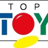
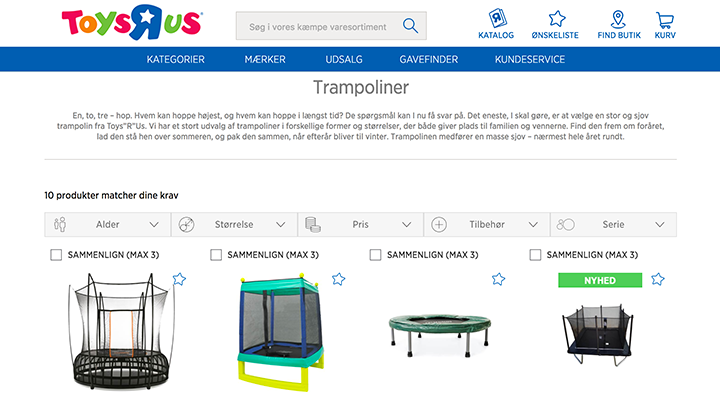

<!DOCTYPE html><html lang="en"></html><head><meta charset="UTF-8"/><meta name="viewport" content="width=device-width, initial-scale=1.0"/><title>CV for Kasper Warmdal Filstrup</title><link rel="stylesheet" href="assets/normalize.css"/><link rel="stylesheet" href="assets/style.css"/></head><body><main><section class="person card"><div class="profile-image  image--square  image--round" style="background-image: url(images/profile2.png);"></div><h1 class="person__name">Kasper Warmdal Filstrup</h1><h2 class="person__title">Lead Frontend Developer<br>UI/UX SME at Capgemini Sogeti Danmark A/S</h2><h3 class="person__subtitle">Frontend developer with focus on performance and maintainability.</h3></section><blockquote class="card"><p>With a natural interest in frontend technologies - and an eager to learn attitude - I strive to deliver innovative and complex solutions as simple and easy to use as possible.</p><p>With eyes on the ball and with great respect for business decisions and goals, shipping great code with excellent performance is a personal virtue.</p><p>With professional experience in sales, web design (UI), back- and frontend development, I have a lot of useful knowledge about everything from business decisions, to the user experience and a deep insight into the technical aspect of any online project.</p><p>As result of my broad experience, and as I've navigated through various seas of personas from all of the above stakeholders, I've gained a general understanding of what agendas could be at play in a project or any cooperation, and act accordingly.</blockquote><section class="splitscreen"><div class="third"><h2 class="out">Core skills</h2><div class="card"><ol class="core_skills"><li>JavaScript</li><li>React</li><li>Vue.js</li><li>Node.js</li><li>API's</li><li>Progressive Web Apps</li><li>UX &amp; UI</li><li>Cloud</li><li>MongoDB</li><li>SCSS/LESS/CSS</li></ol></div></div><div class="twothirds"><h2 class="out">Drive &amp; Evolution</h2><div class="card"><h3>DNA</h3><p>As a person, I'm extremely curious when it comes to technology. Ever since I was little, I've had Gadget Mania&trade;</p><p>As a frontend developer, I navigate in an endless ocean of ever changing technology;<br>&ndash; Browsers gets updated almost daily<br>&ndash; New features arrives<br>&ndash; Old features deprecates.<br>&ndash; New frontend frameworks springs up almost as often as browsers update these days.</p><p>Without my natural born curiosity, I would have failed this profession years ago.<br><br></p><h3>Professional evolution</h3><p>I started as a sales rep for one of Denmarks largest web agencies and moved my way up to first being a graphical designer for the clients solutions, and ended in a leading backend developer role.<br>After that, I started my own company with a couple of old coworkers, and spend a couple of years learning a lot about business as well as figuring out more about my real core values. (an 80 hour work week wasn't one of them)</p><p>After that I've been assigned to a <a href="http://www.konform.com/">fancy agency</a> in central Copenhagen, affiliated as a freelancer for a couple of companies in <a href="http://startupvillage.dk/">Startup Village</a> in Copenhagen (<a href="https://graduateland.com">Graduateland</a> and <a href="https://ontame.io/">Ontame.io</a>), senior frontend developer for Denmark's largest toy retailer <a href="http://top-toy.com/">TOP-TOY</a>, and currently, I'm a senior consultant for <a href="https://www.capgeminisogeti.dk/">Capgemini Sogeti Denmark</a>.</p></div></div></section><h2 class="out">Career</h2><section class="card experience"><ul class="jobs"><li class="job"><div class="job__logo"></div><div class="job__content"><h4 class="job__title">Senior Frontend Developer Consultant</h4><p class="job__company">Capgemini Sogeti Danmark A/S</p><p class="job__period">09-2016 - current</p></div></li><li class="job"><div class="job__logo"></div><div class="job__content"><h4 class="job__title">Frontend Developer</h4><p class="job__company">TOP-TOY A/S</p><p class="job__period">03-2015 - 07-2016</p></div></li><li class="job"><div class="job__logo"></div><div class="job__content"><h4 class="job__title">Frontend Developer</h4><p class="job__company">Konform A/S</p><p class="job__period">01-2013 - 02-2015</p></div></li><li class="job"><div class="job__logo"></div><div class="job__content"><h4 class="job__title">Developer &amp; Co-founder/Partner</h4><p class="job__company">Orango ApS</p><p class="job__period">01-2009 - 12-2012</p></div></li><li class="job"><div class="job__logo"></div><div class="job__content"><h4 class="job__title">Backend Developer</h4><p class="job__company">DanaWeb A/S</p><p class="job__period">08-2004 - 12-2008</p></div></li><li class="job"><div class="job__logo"></div><div class="job__content"><h4 class="job__title">Freelance Developer (Front- and backend)</h4><p class="job__company">Fronted</p><p class="job__period">03-2015 - current</p></div></li></ul></section><h2 class="out">Selected projects</h2><section class="projects"><section class="project-float"><section class="card project"><div class="card__image"></div><h4 class="project__company">DR.dk</h4><p class="project__description">Optimizing and developing new features for DR (Danish Broadcasting Corporation) live center.<br>The live center enables the various editors of DR to create events with live video streams from sports and other newsworthy events, enabling the users to engage in the stream of updates through a moderated comment area.</p><p class="project__tech">Technologies used: JavaScript, ASP.MVC, Azure</p><p class="project__period">05-2018 - 06-2018</p></section></section><section class="project-float"><section class="card project"><div class="card__image"></div><h4 class="project__company">Santander Consumer Banking Denmark</h4><p class="project__description">Winner of <strong>CMS Website of the year 2018</strong> award at Episerver Ascend 2018.<br>Complete frontend for car loan application flow.<br><br>Created with Vue.js on top of Episerver rendered content to create a &ldquo;Single Page Application like&rdquo; experience, whilst maintaining the editorial freedom of the CMS.</p><p class="project__tech">Technologies used: Vue.js, SCSS, Webpack</p><p class="project__period">02-2017 - 04-2018</p></section></section><section class="project-float"><section class="card project"><div class="card__image"></div><h4 class="project__company">DSB.dk</h4><p class="project__description">Frontend development of DSB's online ticket sales to support the new unified national zoning system launching in January 2017.<br><br>Travel search and ticket basket handled with React and Reflux.</p><p class="project__tech">Technologies used: React.js, Reflux, Less, Gulp</p><p class="project__period">09-2016 - 01-2017</p></section></section><section class="project-float"><section class="card project"><div class="card__image"></div><h4 class="project__company">Toys&quot;R&quot;Us &amp; BR Legetøj</h4><p class="project__description">Maintaining legacy frontend code and adding new omni channel features.</p><p class="project__tech">Technologies used: Less, AngularJS, Grunt</p><p class="project__period">08-2015 - 08-2016</p></section></section><section class="project-float"><section class="card project"><div class="card__image"></div><h4 class="project__company">Scraperiño</h4><p class="project__description">Cloud based and clustered surveillance SaaS to gain a competitive edge over close competitors.<br>Two Node.js based systems amounted the core of the system &mdash; One to serve the user interface as well as communicating through websockets to the second system &mdash; Another to run scheduled jobs to gather information about competitors products, and alert the first system through websockets when/if competetitors product prices changed to the clients disadvantage.<br>Both systems connected to a Google Cloud SQL.</p><p class="project__tech">Technologies used: NodeJS, Google Cloud SQL, Digital Ocean droplets, React.js, Reflux, MaterializeCSS, Websockets</p></section></section><section class="project-float"><section class="card project"><div class="card__image"></div><h4 class="project__company">Skolevalg</h4><p class="project__description">Complete frontend development, component system and interactive "poster-builder" application, with ImageMagick CLI and an AngularJS frontend</p><p class="project__tech">Technologies used: ImageMagick, AngularJS, SCSS, PHP, GruntJS, jQuery, Bourbon + Neat</p><p class="project__period">08-2014 - 01-2015</p></section></section><section class="project-float"><section class="card project"><div class="card__image"></div><h4 class="project__company">Kræftens Bekæmpelse</h4><p class="project__description">Frontend for desktop site as well as separate mobile site + async navigation pattern</p><p class="project__tech">Technologies used: Less, PHP, GruntJS, jQuery, BootstrapCSS</p><p class="project__period">01-2013 - 02-2014</p></section></section><section class="project-float"><section class="card project"><div class="card__image"></div><h4 class="project__company">Mads Nørgaard</h4><p class="project__description">Complete frontend development</p><p class="project__tech">Technologies used: SCSS, PHP, GruntJS, jQuery, Bourbon + Neat</p><p class="project__period">2013 - 2014</p></section></section></section><h2 class="out">Life</h2><blockquote class="card"><p>Married to Julie - two sons named Balder &amp; Willi.<br>Hobbies are few, but family, TV series, delicious food, tasty red wine and great company keeps me above water.</p><p><em>Born:&nbsp;October 27th 1982</em></p></blockquote></main><footer><p>Ulstrupvej 7&nbsp;&middot;&nbsp;2650 Hvidovre&nbsp;&middot;&nbsp;<a href="tel:+4553770475">+45 53 77 04 75</a>&nbsp;&middot;&nbsp;<a href="mailto:kasper@475.dk">kasper@475.dk</a></p><ul class="social"><li><a href="https://www.linkedin.com/in/kasperwf">linkedin.com/in/kasperwf</a></li><li><a href="https://twitter.com/kasperwf">twitter.com/kasperwf</a></li></ul></footer></body>